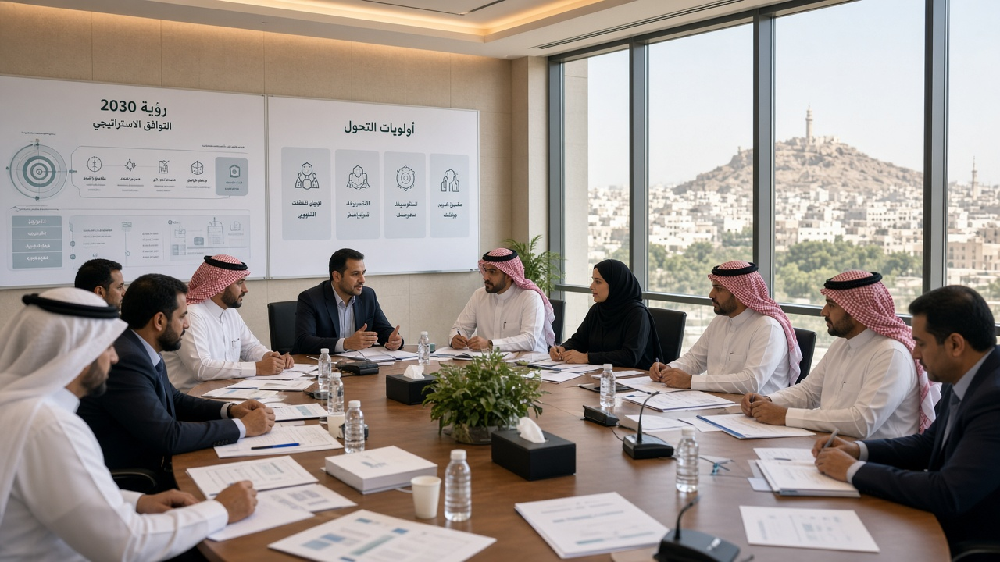
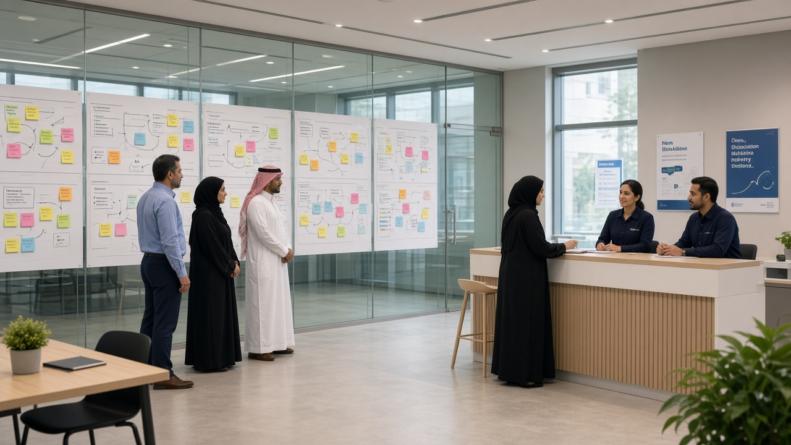

تابع تقدّم المشاريع على الخريطة
نسب الإنجاز والحالة والمواعيد عبر الوكالات الثلاث.
- مكتمل
- قيد التنفيذ
- يحتاج متابعة
- متأخر
- متوقف
- مخطط
وكالة
وكالة التحول الرقمي
تتولى رقمنة خدمات الأمانة، والبنية التقنية، والبيانات، وحماية الأنظمة.
58٪متوسط هذا العرض · 5 مشاريع
منصة البيانات المفتوحة
نشر مجموعات بيانات بلدية قابلة لإعادة الاستخدام مع قاموس موحد.
34٪
حي الزبارة
متأخر 198 يومًا
 يحتاج متابعة تنبيه
يحتاج متابعة تنبيه
شبكة الألياف لمباني الأمانة
ربط المباني البلدية والمراكز بشبكة ألياف بدل الدوائر المتفاوتة السرعة.
58٪
حي المصيف
متأخر 137 يومًا
 يحتاج متابعة تنبيه
يحتاج متابعة تنبيه
مركز عمليات الأمن السيبراني
مراقبة مستمرة للأنظمة الحساسة واستجابة للحوادث على مدار الساعة.
41٪
حي عقدة
متأخر 45 يومًا
 قيد التنفيذ
قيد التنفيذ
نظام متابعة المشاريع
سجل موحد لتقدم مشاريع الوكالات الثلاث بدل المتابعات المتفرقة.
86٪
حي السويفلة
متبقٍ 79 يومًا
 قيد التنفيذ
قيد التنفيذ
تطبيق أمانة حائل
تطبيق للمستفيد لمتابعة البلاغات والمواعيد والخدمات الشائعة.
72٪
حي المنتزه
متبقٍ 107 يومًا
وكالة
وكالة الاستراتيجية
تتولى التخطيط والأداء والدراسات والشراكات التي توجّه أعمال الأمانة.
54٪متوسط هذا العرض · 3 مشاريع
 متأخر تنبيه
متأخر تنبيه
مرصد الأداء المؤسسي
لوحة مؤشرات للإدارة العليا عن أهداف الخطة الاستراتيجية.
38٪
حي الخريمي
متأخر 228 يومًا
شراكة تطوير الحدائق والمتنزهات
نموذج شراكة لتشغيل وتطوير مجموعة حدائق مع القطاع الخاص.
44٪
حي الوسيطاء
متأخر 105 يومًا

قيد التنفيذبرنامج مواءمة رؤية المملكة 2030
ربط مبادرات الوكالات بمستهدفات الرؤية وبرامج الوزارة ذات الصلة.
80٪
حي صديان
متبقٍ 106 يومًا
وكالة
وكالة التميز المؤسسي
تتولى الجودة وتجربة المستفيد وتطوير الإجراءات والابتكار.
50٪متوسط هذا العرض · 3 مشاريع
 متوقف تنبيه
متوقف تنبيه
مسار الابتكار البلدي
مسار داخلي لاستقبال أفكار الموظفين وتجريب الحلول القصيرة.
25٪
حي المصيف
متأخر 107 يومًا
 يحتاج متابعة تنبيه
يحتاج متابعة تنبيه
جودة الخدمات الميدانية
برنامج تفتيش وجودة على الخدمات التشغيلية في الأحياء.
47٪
حي الزبارة
متأخر 44 يومًا

قيد التنفيذمركز تجربة المستفيد
مكان وعملية لقياس الرحلات الحرجة قبل تحسينها وبعده.
78٪
حي المنتزه
متبقٍ 62 يومًا